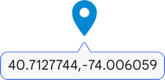

Create Map Search Links
Search by Query
Search by Coordinates

Enter location as comma-separated latitude/longitude coordinates
Invalid input. Please enter coordinates in the format: Latitude,Longitude